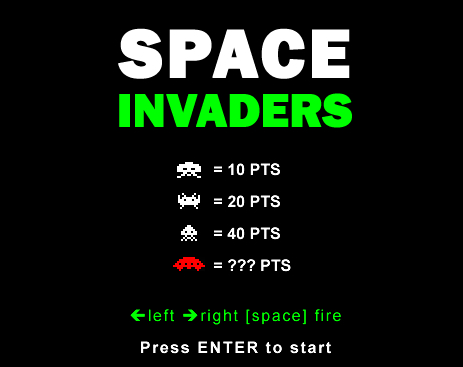
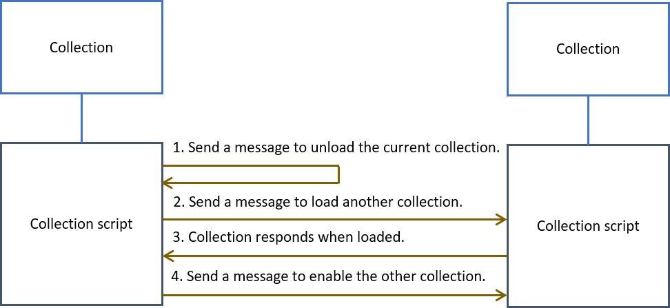
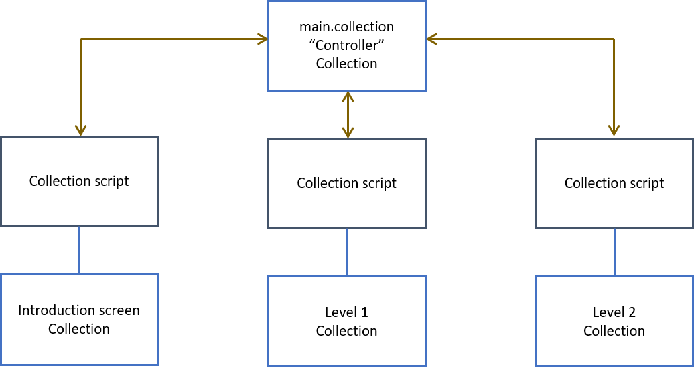

Tutorials for 2D games projects
Building interfaces part 1
Games don't start playing the moment they are loaded. Instead, the user is presented with a screen before initiating the start of the game. When the game is over the player is returned to this screen.

More complex games present a menu interface allowing the player to adjust settings, choose levels etc.
In Defold, each screen, often called a "game world" is a collection. By convention, the bootstrap collection, that is the one loaded first, is called main.collection, although it can be changed in the .project file.
Typically for space invaders you would have a collection for the title screen and another collection for the screen on which the game is played.
In Defold, loading another collection is a four step handshake process.

The collections are not permanently stored in memory. Instead they are loaded when needed which makes the game more memory efficient.
As it is not a simple case of using a command to open another screen, it is better to use main.collection to control the loading and unloading of all the other collections.

If we were making Space Invaders, we would have main.collection as our bootstrap, and get it to load the menu collection in it's init function. When the player presses Enter, the menu collection script would send a message back to the main.collection script asking it to load the game collection and unload the menu.
 Craig'n'Dave | Version 1.3
Craig'n'Dave | Version 1.3